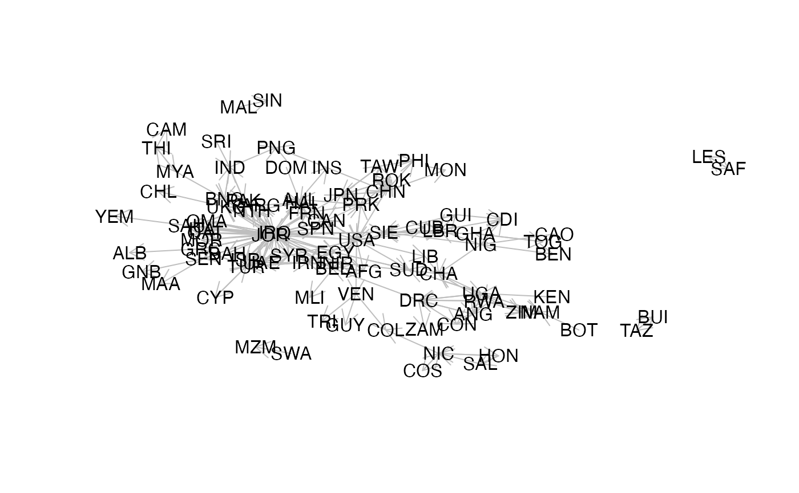
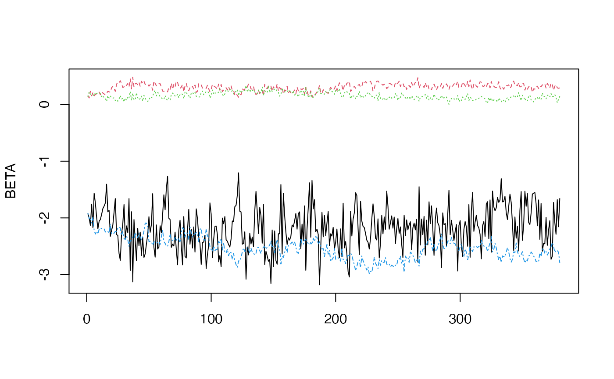
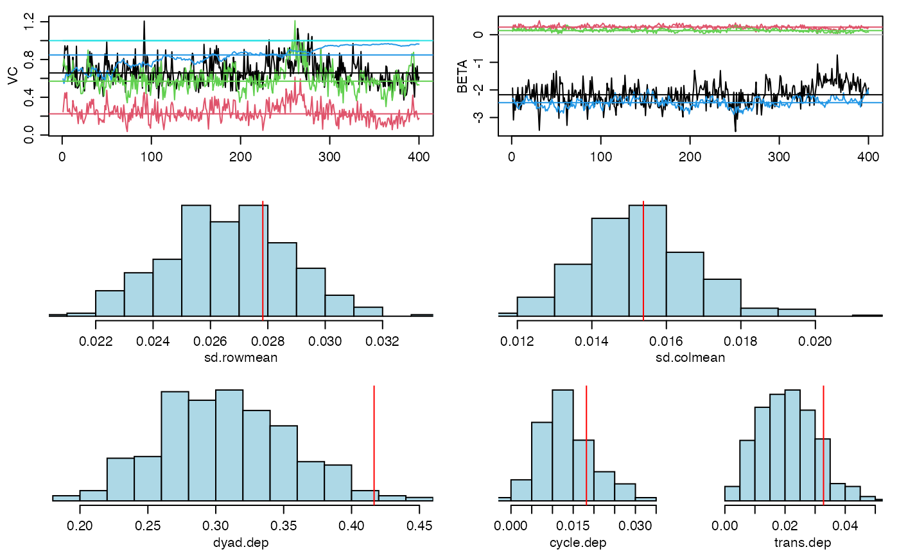

DIY modeling of a binary network outcome
Peter Hoff
2018-07-31
Source:vignettes/diy_binary_demo.Rmd
diy_binary_demo.RmdThe amen package provides wrapper functions ame and ame_rep for fitting a wide variety of AME models. However, wrapper functions can be opaque, and even wrapper functions with many options are limited by the energy and imagination of their authors. Therefore, some users may prefer to use some of the low-level amen functions to build their own custom Gibbs samplers for AME model fitting.
In this vignette, I show how to build such a sampler for a binary AME model. The example data we will use is the international relations data IR90s that comes with the amen package. We will model the binary indicator of conflict initiation between pairs of countries. Note that this dyadic variable is a count of the number of conflicts. For the purpose of this example, we dichotomize it:
library(amen)
Y<-1*(IR90s$dyadvars[,,"conflicts"] >0 )
netplot(Y,plot.iso=FALSE,plotnames=TRUE)
Which pairs of countries have conflicts? Well, poor countries that are far away from each other don’t have conflicts. With this in mind, let’s fit a model of international conflict that has as predictors the GDPs of the initiator and target countries, as well as the geographic distance between the pair (both on a log scale):
Xn<-log(IR90s$nodevars[,2])
Xd<-log(IR90s$dyadvars[,,3]+1) The binary probit AME model we will fit to Y, Xn and Xd is \[
\begin{align*}
z_{i,j} & = \beta_0 + \beta_r \text{gdp}_i + \beta_c \text{gdp}_j + \beta_d \text{dist}_{i,j} + u_i^\top v_j + a_i +b_j + \epsilon_{i,j} \\
y_{i,j} & = 1( z_{i,j}> 0 )
\end{align*}
\] where \(\text{Var}{ (\begin{smallmatrix} a_i \\ b_i \end{smallmatrix} ) } = \Sigma_{ab}\), \(\text{Var}{ (\begin{smallmatrix} u_i \\ v_i \end{smallmatrix} ) } = \Sigma_{uv}\), and \[ \text{Var}{ ( \begin{smallmatrix} \epsilon_{i,j} \\ \epsilon_{j,i}\end{smallmatrix}) } = \Sigma_\epsilon = \sigma^2 \begin{pmatrix} 1 & \rho \\ \rho & 1 \end{pmatrix}.
\]
We will construct a Gibbs sampler to approximate the joint posterior distribution of all unknown quantities, which includes
the global parameters \(\beta, \Sigma_{ab}, \Sigma_{uv}, \rho\);
the latent nodal effects \(\{ (a_i, b_i, u_i, v_i): i=1,\ldots, n\}\);
the unobserved latent dyadic variables \(z_{i,j}\).
Here we go. First note that the “linear regression” part of the model may be written as \(\beta^\top x_{i,j}\) where \(x_{i,j} = ( 1, \text{gdp}_i , \text{gdp}_j , \text{dist}_{i,j} )\). and \(\beta = ( \beta_0 , \beta_r, \beta_c \beta_d)\). We construct the “design array”, the \(n\times n \times p = 130 \times 130 \times 4\):
X<-design_array(Xrow=Xn,Xcol=Xn,Xdyad=Xd,n=nrow(Y)) If you are not sure what this is doing, examine X yourself or study the following output:
dim(X) ## [1] 130 130 4dimnames(X)[[3]] ## [1] "intercept" ".row" ".col" ".dyad"X[1:3,1:3,1]## [,1] [,2] [,3]
## [1,] 1 1 1
## [2,] 1 1 1
## [3,] 1 1 1X[1:3,1:3,2]## [,1] [,2] [,3]
## [1,] 2.959587 2.959587 2.959587
## [2,] 2.191654 2.191654 2.191654
## [3,] 4.894925 4.894925 4.894925X[1:3,1:3,3]## [,1] [,2] [,3]
## [1,] 2.959587 2.191654 4.894925
## [2,] 2.959587 2.191654 4.894925
## [3,] 2.959587 2.191654 4.894925X[1:3,1:3,4]## [,1] [,2] [,3]
## [1,] 0.000000 1.6733512 1.9257074
## [2,] 1.673351 0.0000000 0.9321641
## [3,] 1.925707 0.9321641 0.0000000Next we need starting values for all (but one) of our unknown quantities. Because this is just a tutorial I will set these lazily:
Sab<-diag(2)
rho<-0
R<-2
Suv<-diag(2*R)
U<-V<-matrix(0,nrow(Y),R)
# just need Z[i,j]<0 if Y[i,j]=0, Z[i,j]>0 if Y[i,j]=1
Z<-matrix(zscores(Y,ties.method="random"),nrow(Y),nrow(Y))
Z<-Z-max(Z[!is.na(Y) & Y==0 ] )
diag(Z)<-0Finally, we specify some aspects of the prior distribution. The functions in the amen package use a \(g\)-prior for \(\beta\) by default (but this can be changed) and an arc-sine prior or uniform prior for \(\rho\). The priors for \(\Sigma_{ab}\) and \(\Sigma_{uv}\) are
- \(\Sigma_{ab}^{-1} \sim W( \Sigma_{ab0}^{-1}, \eta_0 )\);
- \(\Sigma_{uv}^{-1} \sim W( \Sigma_{uv0}^{-1} , \kappa_0)\).
Sparse network datasets may not provide much information with which to estimate \(\Sigma_{ab}\) and \(\Sigma_{uv}\). For such data, estimation stability can be improved by concentrating the scale of these covariance matrices near some empirical Bayes estimate, where the concentration is decreasing with the amount of information in the data. The following calculations provide one way to adaptively choose the priors for \(\Sigma_{ab}\) and \(\Sigma_{uv}\) based on the information in the data:
ybar<-mean(Y,na.rm=TRUE) ; mu<-qnorm(ybar)
E<- (Y - ybar)/dnorm(qnorm(ybar)) ; diag(E)<-0
a<-rowMeans(E,na.rm=TRUE) ; a[is.na(a)]<-0
b<-colMeans(E,na.rm=TRUE) ; b[is.na(b)]<-0
vscale<-mean(diag(cov(cbind(a,b))))
PHAT<-pnorm(mu+outer(a,b,"+"))
vdfmlt<-.25/mean(PHAT*(1-PHAT))
Sab0<-diag(2)*vscale
eta0<-round(4*vdfmlt)
Suv0<-diag(2*R)*vscale
kappa0<-round((2*R+2)*vdfmlt) Now all we need is a for-loop that iteratively updates the unknown quantities from their full conditional distributions:
BETA<-NULL ; RHO<-NULL ; UV<-matrix(0,nrow(Y),nrow(Y))
for(s in 1:10000)
{
# update beta, a and b
tmp<-rbeta_ab_fc(Z,Sab,rho,X,offset=U%*%t(V))
beta<-tmp$beta ; a<-tmp$a ; b<-tmp$b
# update UV
tmp<-rUV_fc(Z,U,V,Suv,rho,offset=Xbeta(X,beta) + outer(a,b,"+"))
U<-tmp$U ; V<-tmp$V
# update Suv
Suv<-rSuv_fc(U,V,Suv0=Suv0,kappa0=kappa0)
# update Sab
Sab<-rSab_fc(a,b,Sab0=Sab0,eta0=eta0)
# update rho
rho<-rrho_mh(Z,rho,offset=Xbeta(X,beta)+outer(a,b,"+")+U%*%t(V))
# update Z
Z<-rZ_bin_fc(Z, Xbeta(X,beta)+outer(a,b,"+")+U%*%t(V), rho, Y)
# periodically save some output
if(s%%25==0 & s>500)
{
cat(round(100*s/10000),"% complete\n")
BETA<-rbind(BETA,beta)
RHO<-c(RHO,rho)
UV<-UV+U%*%t(V)
matplot(BETA,type="l")
}
}
The mixing is a bit slow, so you would probably want to run the Markov chain longer to obtain some final results.
Here is the “wrapper” version, fitting the same model:
fit<-ame(Y,Xrow=Xn,Xcol=Xn,Xdyad=Xd,R=2,family="bin")
Now compare posterior density approximations:
for(j in 1:4)
{
plot(density(BETA[,j] ),main="",xlab="")
lines(density(fit$BETA[,j] ),col="green")
}
The longer you run the Markov chains, the closer the two approximations should get to each other (and to the actual posterior distribution).